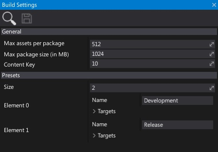

Build Settings
Build settings asset specifies the Game Cooker options and contains set of game building presets. For editing and using presets see Game Cooker window as it has a better interface to do it.
Properties

| Property | Description |
|---|---|
| Max assets per package | The maximum amount of assets to include into a single assets package. Assets will be spli into several packages if need to. |
| Max package size (in MB) | The maximum size of the single assets package (in megabytes). Assets will be spli into several packages if need to. |
| Content Key | The game content cooking Keys. Use the same value for a game and DLC packages to support loading them by the builded game. Use 0 to randomize it during building. |
| For Distribution | If checked, the builds produced by the Game Cooker will be treated as for final game distribution (eg. for game store upload). Builds done this way cannot be tested on console devkits (eg. Xbox One, Xbox Scarlett). |
| Skip Packaging | If checked, the output build files won't be packaged for the destination platform. Useful when debugging build from local PC. |
| Additional Assets | The additional assets to include into build (into root assets set). |
| Additional Asset Folders | The additional folders with assets to include into build (into root assets set). List of paths relative to the project directory (or absolute). |
| Shaders No Optimize | Disables shaders compiler optimizations in cooked game. Can be used to debug shaders on a target platform or to speed up the shaders compilation time. |
| Shaders Generate Debug Data | Enables shader debug data generation for shaders in cooked game (depends on the target platform rendering backend). |
| Presets | The build presets. |